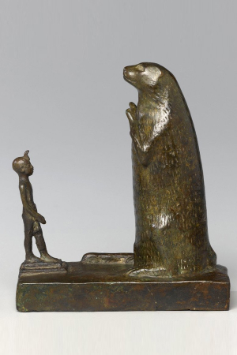
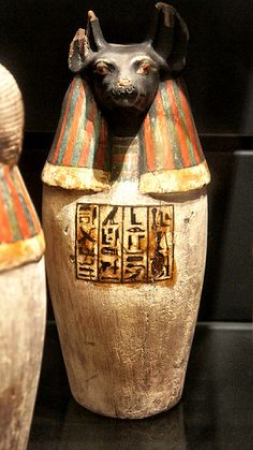
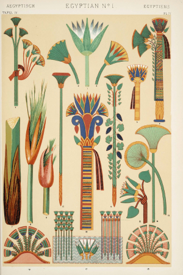
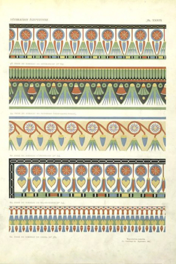

Мир пирамид, золотых колесниц, птицеголовых богов и монументальных париков привлекал иностранцев
во все
времена: Пифагор
и Аристотель, Плутарх и Юлий Цезарь, Исаак Ньютон и Наполеон Бонапарт пытались разгадать
загадку Египта,
да так и не смогли.
Отголоски этих попыток преследуют нас повсюду: на улицах Парижа, Петербурга
и Рима, в ампирной мебели, в эстетике «ревущих двадцатых», на реверсе
долларовых банкнот
и даже в названии
одной весьма
почтенной науки. Сказать по чести, в модных интерьерах последних двадцати лет они встречаются куда
реже, чем
в начале
XIX и XX веков. Но все же не так уж редко.
Пример ниже представляет собой тот редкий случай хорошей стилизации, когда прямое
цитирование самых очевидных и
узнаваемых мотивов не превращает интерьер в дешевый китч.
Как дизайнеру удалось этого добиться?
Предметы и поверхности не
сияют новизной. Декор ведет себя благовоспитанно
и старается выглядеть скромнее и проще, чем есть на самом деле. За исключением
полированного столика и
кое-каких
бронзовых деталей все поверхности матовые.
Обилие мелких деталей и
сложный текстиль уравновешиваются сдержанным цветовым
решением. В мягком свете от окна ни один
элемент не кричит
и не выпрашивает внимания.
В интерьере нет
ни одного
грубого элемента. Ручная роспись стен и декор столбиков
выполнены тонко и изящно, на
элегантном легконогом столике расположились
не менее элегантные винтажные часы. В раме на причудливой подставке — зарисовка
головы в античном духе.
В руках у сидящей музыкантши изображена так называемая дуговая арфа. Арфа считалась престижным
инструментом
и, помимо чисто увеселительных мероприятий, использовалась также
и в храмовых празднествах.
Полуарки ненавязчиво поддерживают архитектурную тему: они напоминают одновременно и египетские
карнизы
с выкружкой, и полукруглые своды, которые встречаются порой в культовых сооружениях.
Нильский лотос, или, точнее, водяная лилия – один из главных символов Египта, распространенный мотив
декоративной
росписи и ювелирного дела.
По представлениям египтян, из лотоса рождается Солнце.
Кровать и пол демонстрируют едва ли
не полный набор орнаментов Нильской долины: полоска, мелкая клетка, зигзаг, цветы и птицы (в данном
случае – коршун,
символ богини Нехбет).
Навершия столбиков кровати выполнены
в виде бутонов лотоса, подобно колоннам египетских храмов, изображавших пальмы, лилии или связки
папируса. Сами столбики
расписаны орнаментом в виде зеленых перьев с золотой обводкой – одно из классических цветовых
сочетаний.
Зеркало и консоль выполнены в русле египетской архитектурной традиции. Пилястры
и ножки
заканчиваются пальмовидными
капителями, два карниза имеют характерную выкружку и украшены пальмовыми же листьями.
Полуэллипс
внизу столешницы
напоминает крылья коршуна или сокола.
Архаическая лошадиная голова привносит элемент эклектики
и не позволяет
интерьеру стать слишком серьезным.
Кресла и диван чрезвычайно массивны
и отвечают скорее ассиро-вавилонскому, нежели египетскому вкусу. От Египта здесь плавные
скругления
подлокотников
и легкий наклон спинок, от Вавилонии — короткие ножки в виде перевернутых
конусов.
Журнальный стол, судя по всему — вариация на тему марокканских складных
столиков
с заменой латунного подноса
на стеклянную столешницу. Ножки
и крестовина выполнены из популярного
у египтян черного дерева.
Не имея ни одной строго египетской детали, кроме зеркала с консолью, этот интерьер, тем
не менее, вполне
отражает самое
египетское и, шире, ближневосточное понимание монументальной эстетики.
Простые, несколько тяжеловесные формы позволяют
сосредоточить внимание зрителя на цвете и фактуре поверхностей. Автор
использует ультратрадиционное египетское сочетание: золото и глубокий синий, но намеренно снижает
интенсивность
последнего почти до антрацита, что позволяет гамме стать спокойнее и умереннее. Общий стиль при
этом уходит
от
варварского экзотизма
и сближается с ар-деко.
Видимая нам часть интерьера состоит из двух
композиций. Первая — группа
у дальней стены: пара светильников и полдюжины карандашных штудий во главе
с диваном. Вторая — столик, два кресла и зеркало между ними. Обе они,
если смотреть на каждую фронтально, исполнены одинаково: это две весьма устойчивых композиции. Обе
симметричны и вписаны
в треугольник, имеют в основании низкие, массивные золотые предметы и венчаются легкими
светлыми
конструкциями. Если
дизайнер задумывал это как тонкую шутку на тему пирамид,
то она, пожалуй, удалась.
Контекст
Около 5000 лет назад пара десятков городов-государств, расположенных
по берегам
североафриканской реки Нил, объединились
в Египетскую державу под властью божественных царей. Нил давал египтянам воду для питья и орошения
полей,
плодородный ил
египтяне и страну свою звали «Черной землей»,
противопоставляя ее
«Красной земле» — пустыне
для взращивания пшеницы, папируса и льна, рыбу и птицу
Довольно предсказуемым образом растения встречаются в декоративном
искусстве Египта чаще всего; птицы — в первой пятерке
мотивов.
. Хапи, тучный синекожий бог разливов великой реки,
почитался в
числе главных богов, отождествляясь то с Хнумом, творцом людей, то с мировым океаном
Нуном, отцом всех
богов.
Колоссальный урожай зерна и контроль над крупнейшими золотоносными
провинциями
обеспечили Египту экономическое лидерство
в регионе. Страна расцвела и стала одним из важнейших в мире центров науки
и культуры на следующие три
тысячелетия.
Правители Месопотамии мечтали породниться с египетскими царями. Инженерные достижения египтян
предопределили
развитие
минойской и микенской архитектуры. Лучшие ученые Древней Греции получали престижное образование
в Египте.
Кризис бронзового века поставил крест на многих цивилизациях своего времени.
Египет выжил, но прежнего блеска вернуть не
смог. В VII–IV веках его захватывали
то ассирийцы, то персы, то Александр Македонский, то Октавиан Август —
виновник знаменитого самоубийства
Клеопатры VII.
Так Египет стал римской провинцией,
а еще через полтысячелетия самобытная египетская культура окончательно растворилась в огромном
арабском
мире.
Сандалии из погребального инвентаря египетской царицы Тутмоса III в середине 18-й династии
Архитектура
Египтяне не знали сопромата
сопротивление материалов — раздел механики, который учит нас, как делать конструкции
прочными и
надежными
, а потому всегда придавали своим
сооружениям избыточную прочность — так, на всякий случай.
Снаружи здания имели мощные глухие стены почти без окон. Для пущей устойчивости стены особо крупных
сооружений часто
строили наклонными
пирамиды и обелиски — тоже частный случай такой методы
. Внутри длинные потолочные балки подпирались
многочисленными колоннами, которые египтяне специально
изобрели, чтобы
не ограничивать полет архитектурной мысли и строить храмы столь огромные,
что сегодня во многих из них уместился бы небольшой жилой комплекс.
1
/
6
Колонны в храме Хнума, Эсна (180-45 до н. э.)
Заупокойный храм Хатшепсут
в Дейр-эль-Бахри
Луксорский храм
Луксорский храм
Храм Эсне берег Хнума
Храм Эсне берег Хнума
Стране фараонов посчастливилось находиться посреди крупнейшей в мире пустыни, поэтому особенную
симпатию ее
жители
питали к оазисам, садам и прудам с уточками. Однако сады до́роги и требуют ухода,
а вот единожды вытесанная
колонна
никуда не денется. В Египте это значит, что любой столб, если он не подпирает статую
царя или капитель
верхняя декоративная деталь колонны, букв. «голова»
с
ликом богини Хатхор
усилиями резчиков по камню превратится в лотос, папирус или пальму. Потолок, скорее всего,
распишут под
звездное небо,
пол и стены украсят изображениями цветущих трав и птиц. Добавьте к этому храмовую музыку,
загадочную игру
света в
полумраке и тонкую дымку благовоний — и вот вы уже, кажется, уверовали в
Осириса, Исиду и Бастет.
Колонны в храме Хнума,
Эсна (180-45 до н. э.)
Архитектура
Живописи Египта в чем-то крупно не повезло. Станкового искусства
то есть картин, которые пишутся на мольберте, а потом на нем же остаются
или вешаются, скажем, на стену
в древности
не знали, а только покрывали росписями стены, полы и потолки. В этом случае сохранность
произведения целиком зависит от
сохранности здания, и вот тут открывается самое неприятное. Из прочного камня строили
только то,
что предназначалось вечности, то есть храмы и гробницы, и сегодня даже далекие
от востоковедения люди замечательно представляют себе, как именно эти самые гробницы расписывались.
Дворцы и крепости
строили из кирпича-сырца
сырец, то есть необожженный кирпич, живет недолго и разрушается легко: посмотрите, что
осталось от зиккуратов и настоящей, нетуристической Китайской стены)
,
а дома простых горожан — так и вовсе из сушеного
ила. От их декора, каким бы он ни был, почти
ничего не осталось.
Все это влечет за собой типичную «ошибку выжившего»
когнитивное искажение, которое заставляет нас верить, к примеру, что летать самолетами опасно;
на самом деле погибнуть на велосипеде или в авто куда проще, авиакатастрофы просто
чаще показывают в новостях
:
из-за того, что широкой публике сплошь известны одни только нарисованные цари, царевичи, боги
да богини, не страдающие излишней широтой кругозора дизайнеры предлагают изображать
их на стенах современных квартир, считая, что такой прием отлично отражает египетский стиль. Сами
древние египтяне, пожалуй, пришли бы в ужас, если бы увидели священные храмовые изображения
у себя на кухне или в спальне. Тем более что изготавливали их не ради красоты,
а для дела: одни фрески пересказывали для потомков биографию и карьерные достижения уважаемого
покойника, другие служили иллюстрированным путеводителем по загробному миру, третьи объясняли
устройство Вселенной, и так далее.
Гробница Небамона на западном берегу Нила в районе Древних Фив (Уасет) была расписана
безвестным египетским художником (1390 г. до н.э.).
Скульптура. Декоративно-прикладное искусство
Ровно то же самое происходит со скульптурой и декоративными изделиями: первым делом
дизайнер-неофит вспоминает погребальные маски, мумии, саркофаги, канопы пирамиды и прочие
жизнерадостные
вещи
сосуды для органов усопшего
.
А надо бы — портреты царевен из мастерской Тутмоса
придворный скульптор царя-вероотступника Эхнатона, автор знаменитого бюста Нефертити
, фаянсовые фигурки животных, тончайшие алебастровые лампы, изящные вазочки и парфюмерные сосуды.
В качестве компромисса подойдут реплики (или подлинники, если ваш заказчик богат) небольших статуэток
с изображениями богов и людей.


Колористика
Основной прием египетской колористики — дихотомия темного (от черного до синего,
бирюзового и зеленого) и светлого (от золотого до белого) цветов. Символика первой
группы предельно проста: черный, синий и зеленый — это плодородная земля, чистое небо, вода
и растения, рост и жизнь. Золото связано с солнцем, также известно, что из него состоит
плоть богов; белый цвет — с серебром, погребальными пеленами Осириса и Птаха, короной
Верхнего Египта. Красный ассоциируется с ненавистной египтянам пустыней и ее повелителем
Сетом, а также
с иноземцами
Долгое время Сет почитался как покровитель царской власти и победитель чудовищного змея Апопа,
с ним, к примеру, связаны имена ряда представителей XIX династии. В более
позднее время его образ был демонизирован и приобрел массу дополнительных негативных черт.
.
Существует миф об особой популярности в Египте песочных и бежевых оттенков. Здесь следует
иметь в виду, что многие монументальные произведения дошли до нас
«голыми» — время стерло краску, обнажив известняк и песчаник. Сами же
египтяне цвету этих пород большого значения не придавали.
#261D06
#322F11
#550600
#C35F50
#E1A03D
#100D06
#F6EFE6
Мебель и декор
Синухе, чиновник и политэмигрант эпохи Среднего царства, в своей
автобиографии описывает, как вернулся на родину после долгих лет жизни в изгнании.
В чужой стране он считался богатым человеком и мог позволить себе многое, но, похоже,
тамошние представления о бытовых удобствах сильно отличались от египетских. Вернувшись домой,
Синухе был совершенно счастлив; все вокруг приводило его в восторг, но особенно —
возможность воспользоваться ванной комнатой, посмотреться в зеркало и поспать на кровати.
Традиционная мебель Египта и, шире, всего Ближнего Востока, как правило, зооморфна. Именно здесь
придумали стулья и кресла на львиных лапах — потом они перекочуют в Грецию
и Рим и уже в новой, античной трактовке дойдут до нашего времени
даже если у бабушкиного кресла не обнаруживается пальцев и когтей, присмотритесь,
не напоминает ли
изгиб его передних
ножек элегантную форму лап вашего домашнего кота
. Крышки сундуков и ларей могут принимать форму капюшона кобры.
Следует, однако, иметь в виду, что многие образцы мебели имели сугубо
ритуальное назначение. Знаменитые погребальные ложа
в интернете они нередко называются «кроватями»
и трон Тутанхамона украшены изображениями животных не потому, что юный царь любил коров
и бегемотов. Они просто символизируют соответствующих богов.
Обыденный мир знатного человека был наполнен мебелью вполне в нашем
современном вкусе: прежде всего ей следовало иметь
изящную форму и только потом, возможно, какой-нибудь не слишком броский декор. О комфорте
тоже не забывали: кажется,
египтяне были первыми, кто изобрел удобное сидение в форме паруса, спинки кресел с небольшим
наклоном и рамные кровати,
затянутые эластичной сеткой.
Орнаменты и декоративные мотивы
Орнаменты долины Нила можно условно разделить на две группы:
значащие и незначащие.
К незначащим относятся простейшие геометрические узоры типа полос, зигзагов, мелкой клетки. Вероятно,
в совсем уж седой древности они тоже обозначали что-нибудь вроде волн или пальмовой коры,
но смысл этих посланий затерся, и со временем такой декор стали использовать самым свободным
образом. Присмотритесь: многие знакомые нам клетчатые и полосатые вещи имеют ближневосточное
происхождение.
Значащие орнаменты всегда относятся к сфере божественного, священного, магического. Чаще всего они
связаны с животными и птицами, а также растениями и их частями. Рассказ
о символическом значении каждого мотива был бы слишком длинным, но отметим здесь, что
древность и важность этих символов требует к себе некоторого уважения. Египтяне никогда
не стали бы расписывать полы в спальне коронованными соколами
образ солнечного бога Хора
и анкхами
египетский крест с петлей, символ жизни
, не станем
делать этого и мы. Из невинных мотивов, не требующих особо трепетного отношения, можно
назвать лотос, папирус и раппортный
заполняющий пространство по вертикали и по горизонтали, как ковер
чешуйчатый или перьевидный орнамент.


Материалы
Слоновая кость
Популярный материал для резьбы, а также для инкрустации в черно-белой гамме. Кстати,
кость не всегда принадлежала слонам — египтяне не гнушались
и бегемотами.
Слоновая кость
Популярный материал для резьбы, а также для инкрустации в черно-белой гамме. Кстати,
кость не всегда принадлежала слонам — египтяне не гнушались
и бегемотами.
Слоновая кость
Популярный материал для резьбы, а также для инкрустации в черно-белой гамме. Кстати,
кость не всегда принадлежала слонам — египтяне не гнушались
и бегемотами.
Слоновая кость
Популярный материал для резьбы, а также для инкрустации в черно-белой гамме. Кстати,
кость не всегда принадлежала слонам — египтяне не гнушались
и бегемотами.